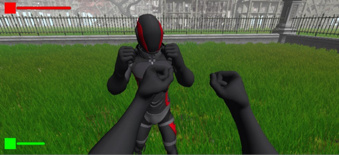
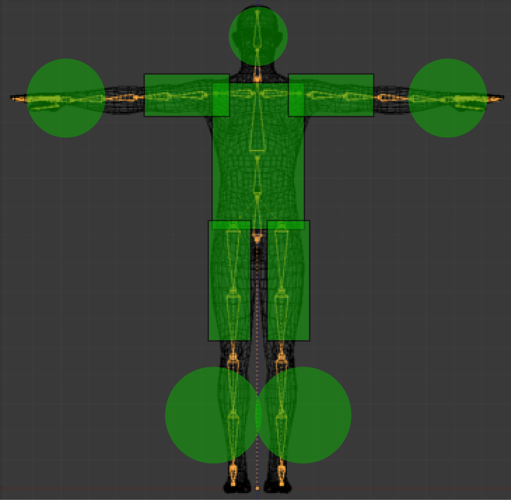
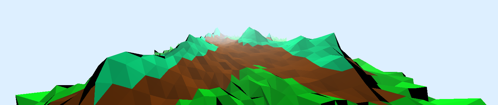
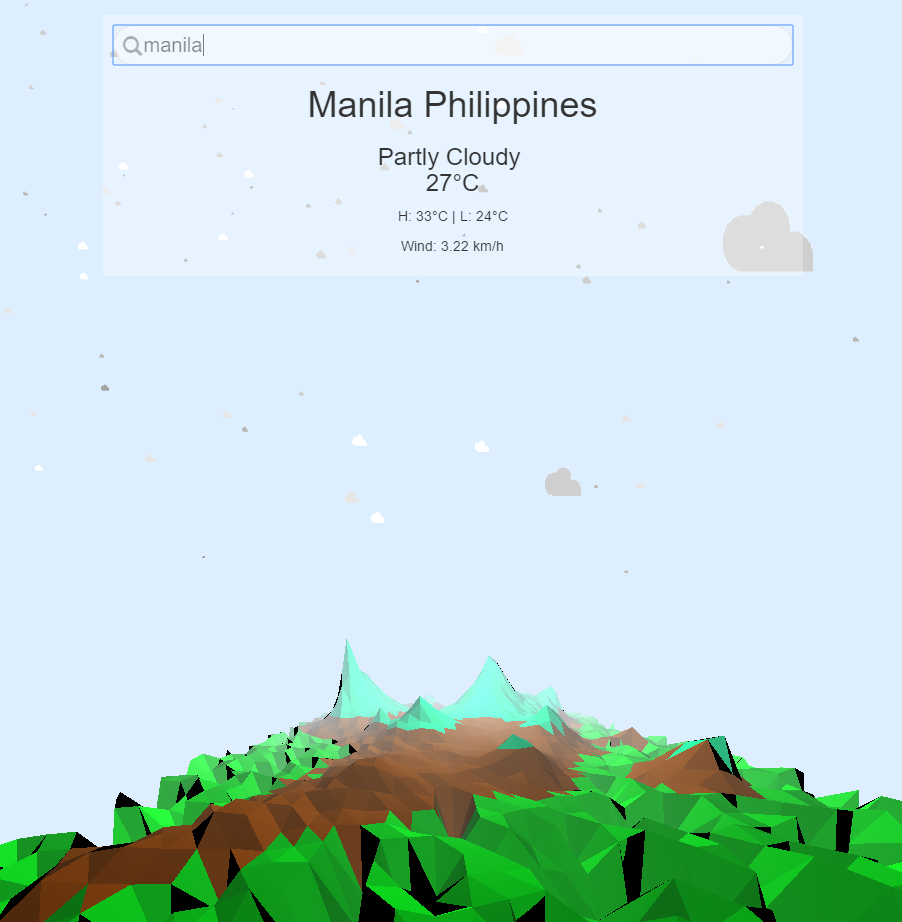

Kelvin Gonzales
DRIVEN, CREATIVE, TECHNICAL
Developer To Be
I am an aspiring developer. I feel like a detective when I code. There is a problem that I need to solve and I am looking for the solution. Debugging leaves trails that will lead me to a clue on how to solve the case. In the end, its rewarding when I get the job done. Case closed!
I love the world of technology. I am fascinated how it can help people do things more efficient. However, it can become a double edge sword and make us very inefficient hehe.
Im interested in video game development as I am a gamer.
Work
Game: First Person Fighting Game
I was the Gameplay Programmer of this project. I suggested to create a fighting game but in a First-Person View. This explores a unique interation and UI for figthing in videogame. I created a Hitbox system using Colliders available in Unity. I implemented a simple User interface by having a common health bar located in the top and a red screen flashing on the screen if User gets hit from the enemy.
This minimalist design was to avoid further clutter on the UI to focus more on the player's opponent.
This is the structure of the hitbox system I implemented. The Sphere Colliders was for where the user are able to hurt opponents except the head. Then the Box Colliders are the hurt boxes. This setup was able to give enough feedback to provide for players if they hit the opponent or not.
App: 3D Weather App
I was one of the developer in the project. I was in charge of the 3D environment in our weather app. We created this app using AngularJS as our framework. This follows the Model, View, and Controller model. This modular method help divide responsibilities for the code. Using three.js, I created a terrain. This terrain then changes its height to mimic motion like trees in the green terrain area.
Used the particles in Three.js to create a 3D space with these images. The terrain rotates around so its not a static terrain in the screen.
Contact
Send an email to me:
kelv.gonzales@gmail.com

Send me a Tweet:
@lcelvin

Check out my repo:
gonz-kelv

Connect with me:
kelv.gonzales@gmail.com
Resume
School:
Simon Fraser University Bachelors of Science in Interactive Arts and Technology
Skills:
I have experiences with languages like JavaScript,CSS,HTML,PHP,Java, and C++
I have used Sotwares like Unity, Adobe Illustrator, Maya, Adobe Photoshop, and SolidWorks.
Exp:
Student Network Engineer
First line of Support. Deploy and install Windows machines. Troubleshoot Windows error and failures. Maintain backup operations.